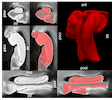
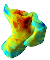
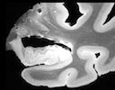

My current research focuses on using deep learning and machine learning techniques to develop improved quantitative MRI biomarkers for Alzheimer's Disease, by integrating information from high resolution ex vivo MRI data, and serial digital histopathology. I am broadly interested in the application of computer vision and machine learning methods in healthcare, with a focus on medical imaging.
I hold an M.Sc in Biomedical Engineering from Carnege Mellon University where I worked with Prof. Steven Chase. Before that, I received a B.Sc in Electrical Engineering from the University of Cape Town, South Africa.
Publications & Conference Proceedings
Methods for brain segmentation in high-resolution ex vivo MRI
subheading.

Constructing an ex vivo MRI atlas of the medial temporal lobe using deformable groupwise registration
Atlas construction involves mapping a collection of scans into a common reference frame using deformable image registration. The MRI atlas provides a powerful tool for analyzing anatomical variability and disease effects in a study population. Conventional approaches for atlas construction fail to handle ultra-high resolution MRI and geometric variability in the medial temporal lobe structure. Therefore, customized image registration pipelines need to be developed to address these issues.

Ex vivo MRI atlas of the human medial temporal lobe enables characterization of tau-specific atrophy in Alzheimer’s Disease (under review)
, LEM Wisse, R Ityerrah, S Lim, ..., P Yushkevich


Characterizing Alzheimer's disease pathology using ex vivo MRI and histopathology
subheading.
Downstream effects of polypathology on neurodegeneration of medial temporal lobe subregions (in preparation)
, LEM Wisse*, R Ityerrah, S Lim, ..., P Yushkevich
(* = co-first authors)
Miscellaneous
subheading.
Distinct types of neural reorganization during long-term learning
X Zhou, RN Tien, , SM Chase
Journal of neurophysiology 121 (4), 1329-134
pdf
Service